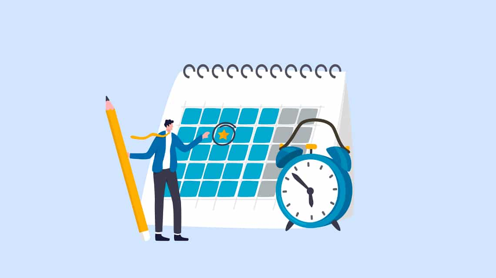
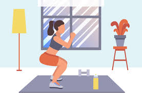
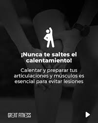
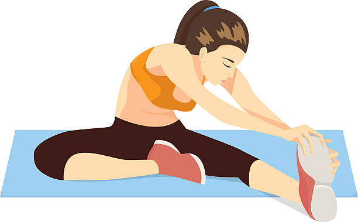

1. Establece un horario fijo
La consistencia es clave. Elige un momento del día que se adapte a tu rutina y conviértelo en tu tiempo de ejercicio sagrado. Idealmente, entrena a la misma hora cada día para crear un hábito.

La consistencia es clave. Elige un momento del día que se adapte a tu rutina y conviértelo en tu tiempo de ejercicio sagrado. Idealmente, entrena a la misma hora cada día para crear un hábito.

Designa un área específica para ejercitarte, aunque sea pequeña. Asegúrate de tener suficiente espacio para moverte libremente y guarda tus accesorios de ejercicio cerca para facilitar el acceso.

Evita el aburrimiento y los estancamientos cambiando regularmente tus ejercicios. Alterna entre cardio, fuerza y flexibilidad para un desarrollo físico equilibrado.

Calentar antes de entrenar es esencial para preparar el cuerpo física y mentalmente. Aumenta la temperatura corporal, activa el flujo sanguíneo hacia los músculos y mejora la movilidad de las articulaciones.

Tu cuerpo pierde líquidos al sudar, y no reponerlos puede causar fatiga, calambres y menor resistencia. Bebe al menos 500 ml de agua 1 hora antes de entrenar, y toma pequeños sorbos durante la actividad. Después, hidrátate para reponer lo perdido. En sesiones largas o de alta intensidad, considera bebidas con electrolitos.

El dolor agudo o punzante no es parte normal del ejercicio. Si sientes mareos, náuseas, falta de aire o un dolor que no es muscular, detente. Ignorar estas señales puede llevarte a lesiones o problemas de salud. Entrenar con conciencia corporal te ayuda a adaptarte y progresar de forma segura.

Dormir entre 7 y 9 horas al día permite que los músculos se recuperen, se fortalezcan y se reduzca el riesgo de lesiones. Además, es durante el descanso que el cuerpo repara fibras musculares dañadas. Evita entrenar intensamente todos los días; incluye 1 o 2 días de recuperación activa o completa a la semana.

Lo que comes antes y después del ejercicio influye directamente en tu energía, recuperación y ganancia muscular. Antes de entrenar, consume carbohidratos ligeros y algo de proteína (como un plátano con yogur). Después, opta por proteínas (como pollo, huevo, legumbres) y algo de carbohidrato para reponer energía. Evita entrenar con el estómago vacío, especialmente en ejercicios intensos.

El estiramiento posterior ayuda a relajar los músculos, eliminar el ácido láctico y prevenir contracturas. También mejora la flexibilidad y reduce la tensión muscular. Dedica al menos 5 a 10 minutos al final de cada sesión para estirar piernas, espalda, brazos y cuello, con movimientos suaves y controlados.
Una postura incorrecta puede causar lesiones graves. Aprende la forma adecuada de hacer cada ejercicio: espalda recta en sentadillas, rodillas sin sobrepasar los pies, hombros relajados, abdomen firme. Si no estás seguro, usa un espejo o busca guía profesional. Es mejor hacer menos repeticiones con buena forma que muchas mal hechas.